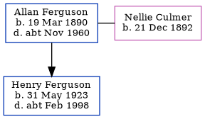

Allan Emery Ferguson 1890 - c1960
[ Home ] | [ Calendar ] | [ Surnames Index ] | [ Family History ], Allan Ferguson, the husband of Nellie Louisa Culmer (the second cousin twice-removed on the mother's side of Nigel Horne), was born in Poplar, London, England on Mar 19, 18901,2,3 and married Nellie (with whom he had 1 child, Henry G) at St Nicholas, Strood, Kent, England on Aug 7, 19164. On Sep 29, 1939, he lived on 15 Billet Road, Thurrock, Essex, England1.
He died c. Nov 1960 in Thurrock3.
Children
- Henry G was born on May 31, 1923
Citations
- 1939 Register - Findmypast (was the head of the household)
- England & Wales births 1837-2006 - Findmypast
- England & Wales deaths 1837-2007 - Findmypast
- England & Wales Marriages 1837-2005 - Findmypast
Media
England & Wales births 1837-2006 - BMD/B/1890/2/AZ/000188/073
England & Wales marriages 1837-2005 - BMD/M/1916/3/AZ/000331/058
England & Wales deaths 1837-2007 - BMD/D/1960/4/AZ/000363/007
Family Tree
Generated by Ged2Site. Last updated on Jul 20, 2025